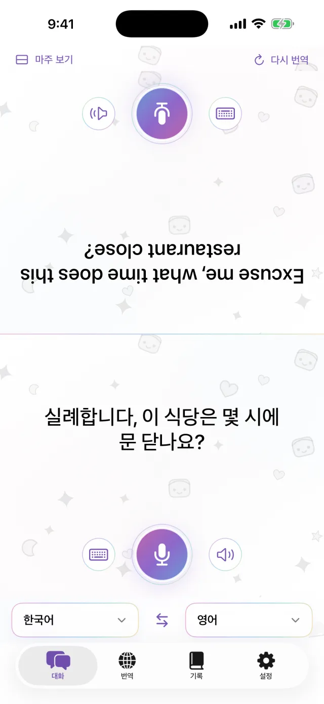
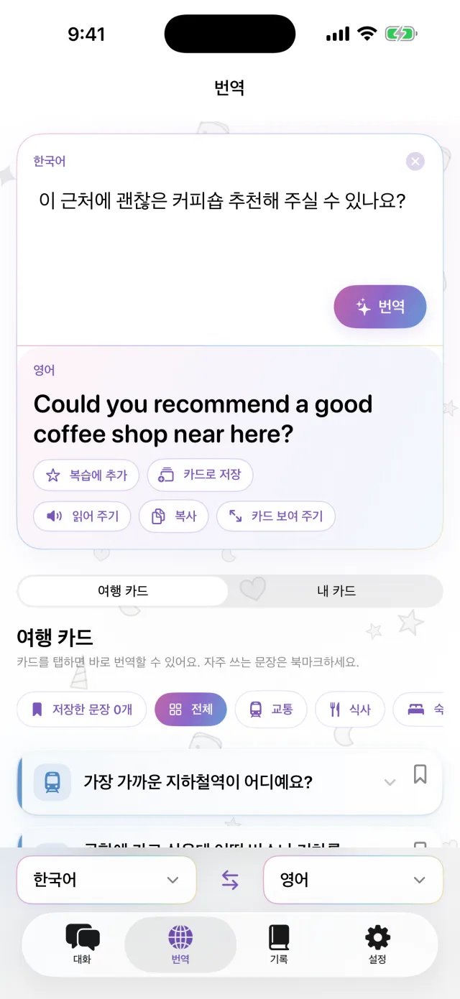
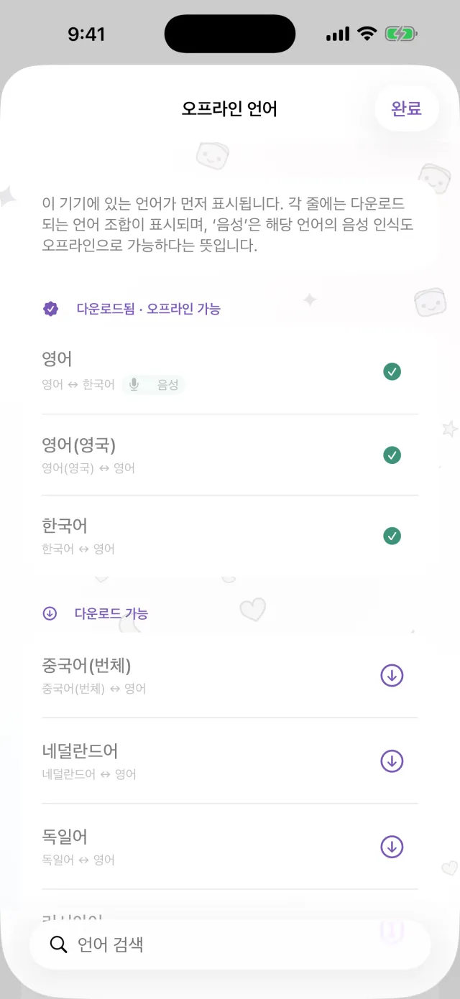
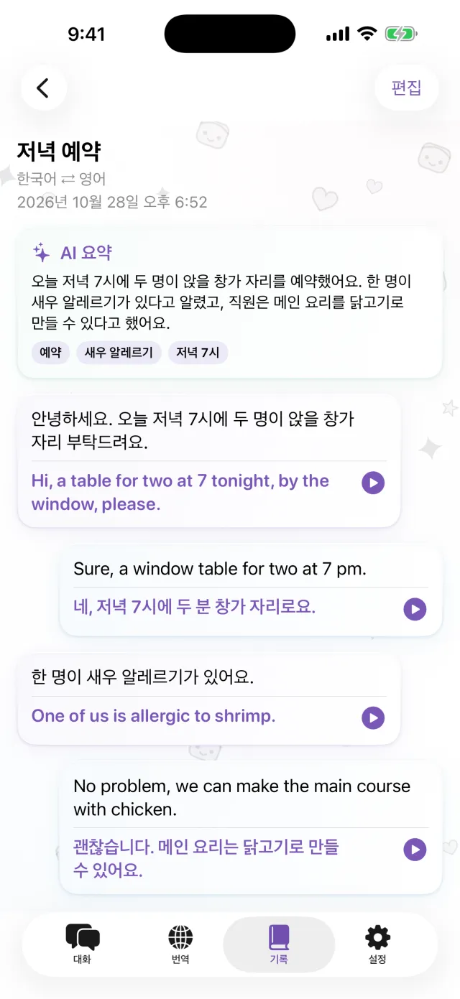
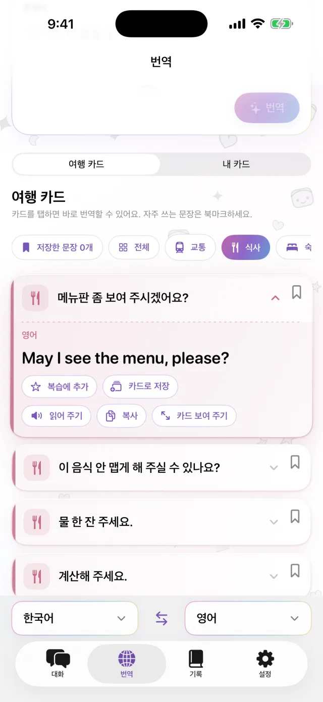
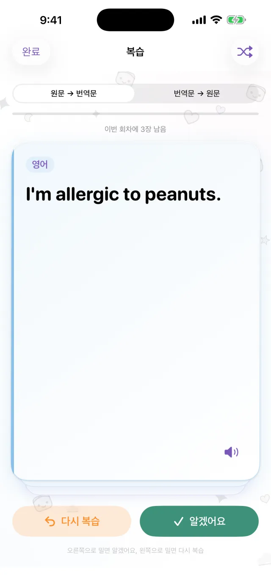

iPhone 번역 앱
iPhone 번역 앱
iPhone을 가운데 두고
말하면 됩니다.
마이크를 누르고 말하세요. 번역이 화면 반대쪽 절반에 상대방을 향해 표시됩니다. 상대방이 대답할 때도 같은 방식으로 쓰면 됩니다. 언어를 미리 다운로드해 두면 인터넷 연결 없이도 사용할 수 있습니다.
App Store에서 다운로드- 약 20개 언어
- 다운로드 후 오프라인 사용
- 가입 불필요

번역 키보드
내 언어로 쓰고, 상대방 언어로 답장하기
번역 곤약 키보드를 추가하세요. 채팅이나 이메일에서 하고 싶은 말을 내 언어로 입력한 다음 키보드를 바꾸면 번역이 이미 나와 있습니다. "바꾸기"를 누르면 내가 쓴 문장이 상대방 언어로 바뀌고, 바로 보낼 수 있습니다. 말투를 바꾸고 싶다면 AI가 만든 캐주얼한 표현, 공손한 표현, 짧은 표현 중에서 고를 수 있습니다. 상대방의 메시지를 읽을 수 없을 때는 메시지를 복사한 뒤 키보드를 바꿔 보세요. 뜻과 함께 상대방 언어로 쓴 답장 몇 가지가 나옵니다.
- 대부분 앱의 입력란에서 사용할 수 있습니다(비밀번호 입력란 제외)
- 번역은 iPhone에서 처리되며, 키보드는 입력한 내용을 저장하지 않습니다
- "되돌리기"를 누르면 원래 문장으로 돌아갑니다
입력
소리 내어 말하기 어려울 땐 입력하세요
조용한 곳이거나 상대방이 너무 빨리 말할 때는 직접 입력하면 됩니다. 번역 결과를 화면 가득 크게 띄워서 상대방에게 보여 줄 수 있습니다.
- 복사하거나 음성으로 들을 수 있습니다
- 두 언어를 한 번에 서로 바꿉니다

오프라인
연결이 없어도 번역합니다
번역, 음성 인식, 읽어 주기가 모두 iPhone에서 처리됩니다. 여행 전에 필요한 언어를 다운로드해 두면 비행기 안에서나 유심을 사기 전에도 쓸 수 있습니다. 기본적으로 말한 내용은 어디로도 전송되지 않으며, 녹음도 저장되지 않습니다.

Pro
대화마다 요약해 줍니다
대화가 끝나면 기록에 짧은 제목과 요약, 키워드가 표시됩니다. 나중에 "오사카에서 저녁 예약한 대화"를 찾을 때 문장을 하나씩 넘겨 볼 필요가 없습니다. 요약은 iPhone에서 Apple Intelligence가 작성하며 업로드되지 않습니다. 대화가 너무 짧으면 요약을 만들지 않습니다. 아무도 하지 않은 말이 들어가는 일을 막기 위해서입니다.
- 대화 전체나 문장 하나만 삭제할 수 있습니다

자주 쓰는 문장 카드
매번 하는 말은 카드로 저장하세요
호텔 주소, 음식 알레르기, 찾는 역. "카드로 저장"해 두면 다시 입력하지 않아도 됩니다. 카드를 누르면 상대방 언어로 번역됩니다. 교통, 식당, 숙소, 쇼핑용 여행 카드도 기본으로 들어 있습니다.

Pro
저장한 문장을 복습할 때가 되면 다시 보여 줍니다
문장에서 별표를 누르면 복습용으로 저장됩니다. 기억하면 1일, 3일, 7일, 14일, 30일 뒤에 다시 나옵니다. 기억나지 않으면 같은 날 한 번 더 나옵니다. 원문을 보고 번역을 떠올리거나, 반대로 연습할 수도 있습니다. 이 기능은 Pro에서 사용할 수 있습니다.

이럴 때 편리합니다
- 작은 식당에서 주문할 때
- 택시 기사님께 주소를 말할 때
- 약국에서 알레르기를 설명할 때
- 호텔 프런트에 짐을 맡길 때
- 길을 물을 때
30초로 보기
이 영상은 비행기 모드를 켠 상태입니다.
기본 정보
| 언어 | 약 20개(Apple이 기기 내 번역을 지원하는 언어) |
|---|---|
| 오프라인 | 가능. 언어를 다운로드한 후 |
| 음성 입력 | 가능. 처음 한 번은 Wi‑Fi로 음성 모델(150–400MB)을 다운로드합니다 |
| AI 요약 | Apple Intelligence를 지원하는 iPhone |
| 번역 키보드 | 모든 앱에서 사용 가능. AI 대체 표현은 Apple Intelligence 또는 본인의 AI 키가 필요합니다 |
| 계정 | 필요 없음 |
| 가격 | 무료. Pro는 별도 결제(아래 참고) |
| 필요 사양 | iOS 18 이상이 설치된 iPhone |
- 처음 한 번은 언어를 다운로드하기 위해 인터넷 연결이 필요합니다.
- 가격은 App Store에 현지 통화로 표시됩니다.
무료와 Pro
무료
- 마주 보고 대화하기
- 입력 번역과 전체 화면 표시
- AI 대체 표현이 있는 번역 키보드
- 오프라인 번역
- 여행 카드와 내 카드 3개
- 작은 배너 광고(짧은 영상을 보면 15분 동안 광고 없음)
Pro
- 대화별 AI 요약
- 전체 번역 기록
- 카드 무제한, 복습 기능
- 광고 없음
주간, 월간 또는 한 번만 결제할 수 있습니다.